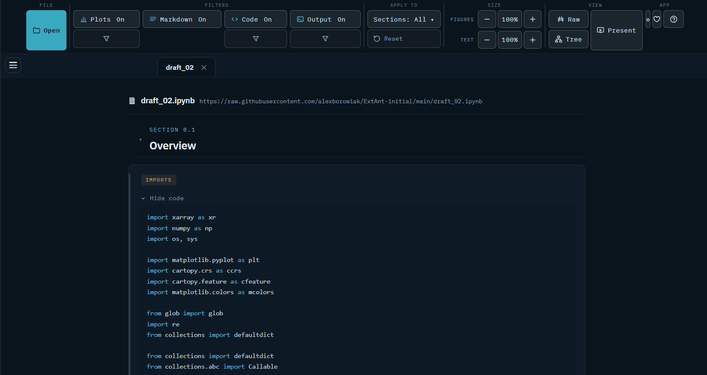
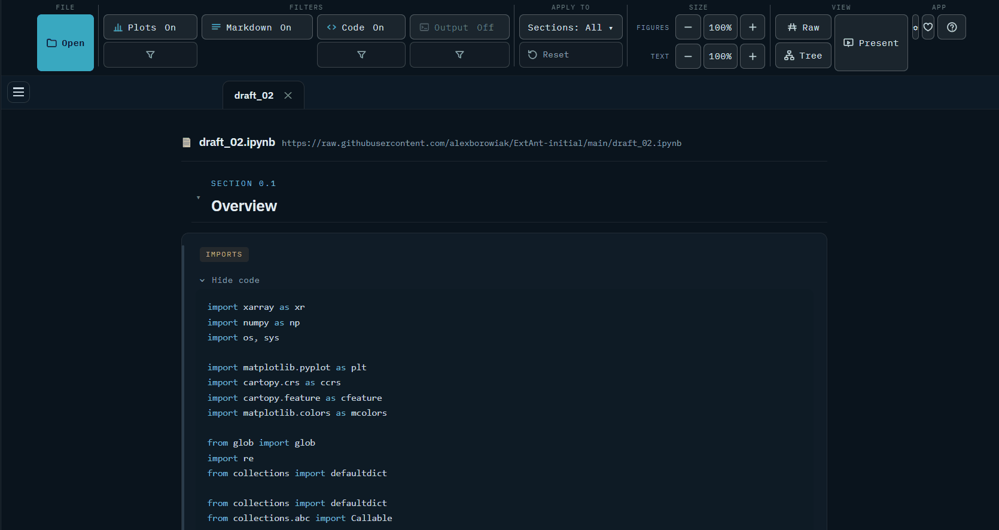
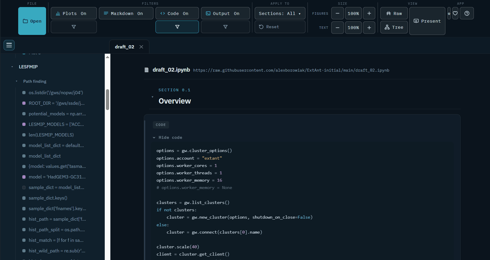
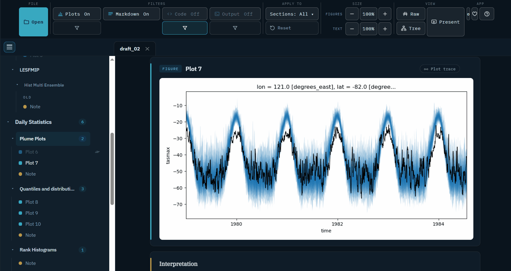
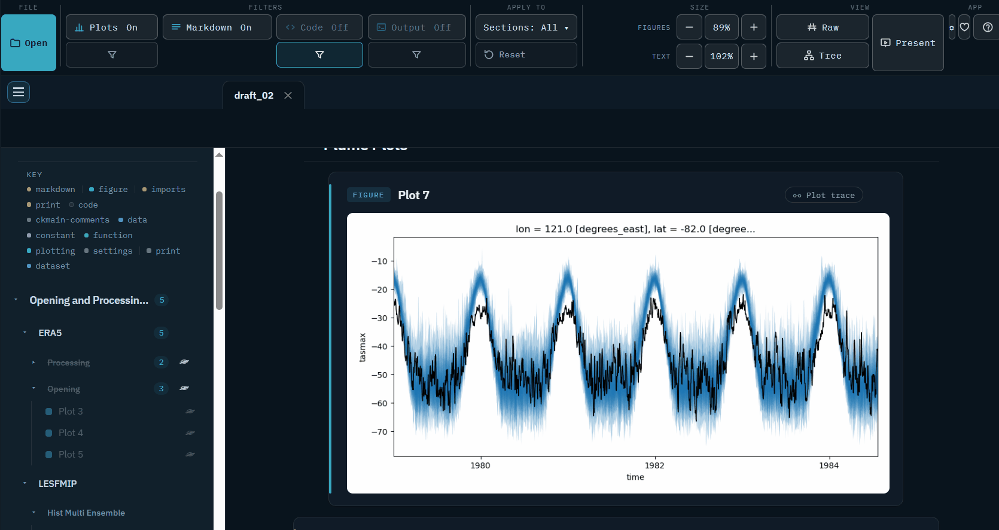
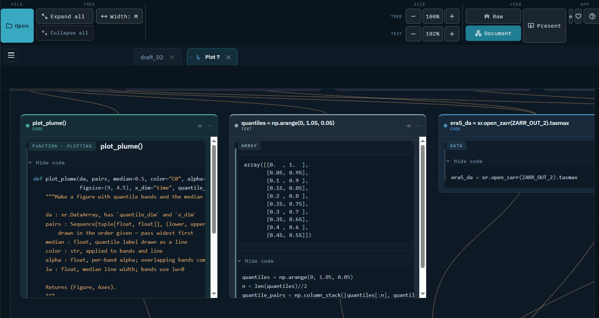
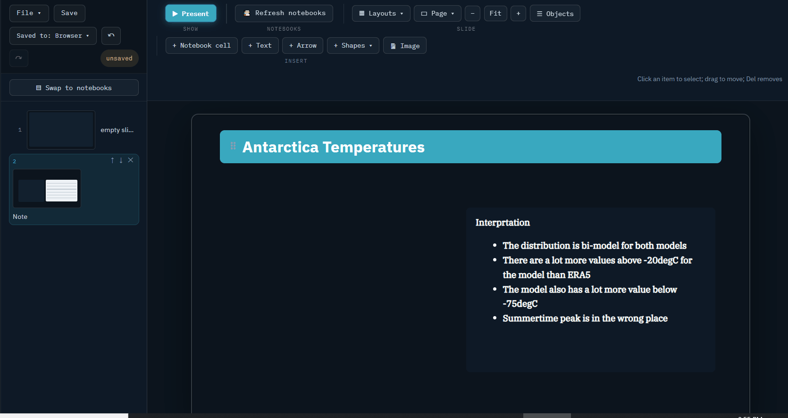

1Open your notebooks — from
local files or a GitHub URL.
2Filter by cell type, and trace
back every cell that builds a plot.
3Build presentations from figures,
markdown and code straight out of the notebook.
4Hit refresh to pull the notebook's
latest changes into your slides — automatically.
See it work

Hide the code — see just the results
Every cell's code folds away behind one click.

Filter your notebook — show only the cells
you want Imports, plotting and prints are told apart, so you
can switch off the housekeeping.

Get rid of what you don't need Hide any cell,
heading or whole section. Nothing is deleted.

Make it big enough to read Grow the figures
and the text, then go full screen and talk to it.

Ask any plot where it came from Plot trace
opens the exact chain of cells that made it.

See the whole analysis at once Your notebook
as a map of what depends on what.

Turn it into a talk — or a poster Drag
your figures onto slides, arrange them, present.Re-run the notebook and the slides catch up
Your figures stay linked to the cells that made them, so when
you update your notebook it updates straight away in the
presentation — no re-exporting, no re-pasting
screenshots.
★★★★★
Its v cool. I'll legit use it for supervisory
meetings.
Alanah ChapmanPhD Candidate
presentations
Open or create
Recent
In the folder
All presentations
Preview
How to use
What this is
A figure-first view of executed Jupyter notebooks. Instead of a
wall of cells, you get the scientific structure: figures, datasets and
notes as cards, code folded underneath, sections in a sidebar, and a
provenance graph of how each result derives from the data. On top of
that sits a presentation builder: turn any notebooks into slides
and present straight from the browser.
Everything runs locally — in the web version, notebooks are
processed in your browser and never uploaded anywhere.
Open notebooks
Drag & drop one or more .ipynb files
anywhere onto the window.
File ▾ → Open a notebook… (File starts the row under
the tabs) — a file picker, or paste a
URL to a notebook (GitHub links are converted automatically).
Notebooks must be executed (run once in Jupyter so outputs
are saved) — nothing is re-run here.
Every open notebook is a tab along the top bar (or a row in
the list down the side, if you choose that under File ▾):
click to switch, (beside File
info) re-reads it after you re-run it in Jupyter,
closes.
Not just notebooks. Markdown (.md,
.qmd), LaTeX (.tex), tables
(.csv/.tsv) and spreadsheet workbooks
(.xlsx — values only, one table per sheet) open
through every one of those doors too. They render the same way, keep the same version history
(snapshots and git commits alike), place figures onto slides that
Update figures can refresh from disk — and each
non-notebook tab says what kind of file it is, in the open-files list
and its sidebar.
Notebook-only, on purpose. Plot trace, the dependency
graph, the variables panel, note insertion and figure locks all read
notebook cells — code, outputs, execution order —
which a .tex or a .csv simply does not have.
The notebook is the whole thing; other files are sources you can read,
quote and refresh.
The ribbon
Like the presentation editor's: File, then two tabs —
Filters (what you see) and View (how you see it: Outline,
Variables, Raw, Tree, Pages and the figure and text sizes) — with
Create slides, Full screen and Present at the end
of the row. The chosen tab's controls are one row under it. The
▴ at the end, a double-click on a tab, or
Ctrl+F1 folds that row away; click a tab to bring
it back. On a narrow window, groups you reach for less (Apply to, Size,
Pages…) fold into a button wearing their name.
Filtering what you see
Four buttons on the Filters tab — Plots,
Markdown, Code, Output — each shows its
CURRENT state and cycles when clicked. They apply to every tab at once.
Plots comes first because a figure is the headline of a cell;
everything else a notebook produces is, loosely, its
output.
All four — Plots, Markdown, Code and
Output (printed tables, values, text) — cycle
On → Fold → Off — the words the buttons
themselves show. Fold tucks that part away behind a
click-to-open toggle; Off removes it.
Code means the code in EVERY cell — imports, prints,
plotting, a bare expression — not just standalone code cells. So
Code: Fold tucks the source away under every figure and
result at once, and a cell that is only code disappears entirely
when Code is Off.
Which plots, Which code and Which output
(the half joined to each filter) are
finer control: untick imports,
plotting… on the code side, or print,
dataset, numeric, string, list,
dict, error… on the output side, to hide just
those. Only the types actually present in the notebook are listed.
Untick every code type and it is the same as hiding code.
Apply to chooses which sections the filters above act
on. Tick a few headings, set the filters, then pick a different set and
filter those differently — every section remembers its own
filters, and a section that differs says · filtered next
to its heading. Reset puts every
filter — and every per-section change — in this notebook
back to the defaults.
Figure size
Figures 100% on the View tab (with
and
either side) resizes every figure in the feed —
click the percentage to snap back to 100%. Figures grow past the text
column, so a wide plot really does get wider.
Point at any figure and its own − + appear at
the top left: those resize just that one, on top of the feed-wide
setting.
The button next to them opens
that figure
full screen — Esc or a click outside closes it.
The sidebar
A key at the top names every card type present; below it,
sections and a jump-to link for every cell.
Collapse or hide a whole section from its chevron and eye
— in the sidebar or on the section heading in the document
itself; the two stay in sync. A hidden section leaves the document but
keeps its (dimmed) sidebar row so you can bring it back.
The eye beside any cell — in the sidebar or on the card
itself — hides just that one cell; a cell hidden this way stays in
the sidebar (dimmed) so its eye can bring it back.
The analysis graph at the sidebar's foot jumps to any node
that declared an #| id:.
The x² button beside the sections toggle (on the tab
row, top left) opens an index of every variable the notebook defines — in definition
order or grouped by type. Click a name to jump to the cell that defines
it; its › chevron unfolds every cell that defines,
redefines or reads it.
Plot trace
Every figure has a Plot trace
button. It opens a new
tab holding just the cells that build that plot — its whole
lineage, load → transform → plot — with a dependency
graph at the top. The tab is the same document view, just subset to
those cells, so every filter and button still works exactly as it does
in the full document. Close the tab (its ) when you are
done; the original document is untouched.
Raw notebook
Raw notebook flips the current tab to the notebook exactly as
authored — cells in order, directives visible — so you can
always see where a title or caption came from.
Keyboard shortcuts
Every shortcut also shows as a key chip in its button’s
tooltip.
PMCOCycle the Plots / Markdown / Code / Output filtersRRaw notebook viewTTree viewFPresent the document full screen+−0Figure size bigger / smaller / resetCtrl+BToggle the sections
sidebarCtrl+OOpen a notebookCtrl+FFind in this notebook
— including inside cells the filters have folded?This help
In the presentation / poster editor:
F5Present from the current slideCtrl+Z / Ctrl+YUndo / redoCtrl+DDuplicate the
selection (or Alt-drag it to drag a clone)Ctrl+Shift+VPaste in place — the coordinates it was copied
from (or, if you last copied a look, paste that look)Ctrl+Shift+CCopy the selected object's look — its typeface, size,
colours, fill and line — for Ctrl+Shift+V
to put on whatever you select nextCtrl+Alt+VPaste here — centred on the pointerCtrl+ASelect everything on the slide (hold Alt as well to
sweep in fully locked items, the same as an Alt-marquee)Ctrl+G / Ctrl+Shift+GGroup / ungroupDelRemove the selectionArrows / Shift+arrowsNudge the selection (fine / coarse)+−0Zoom the page in / out / fit (trackpad pinch works too;
Ctrl+scroll zooms at the pointer and Ctrl+0
fits)RGRulers / the margin-and-column gridHBShow or hide the guides you drew / draw a guide boxAlt+QSearch the commands — type what you want ("format painter",
"slide number", "fade") and Enter runs it, on its own tabF2 / EnterStart typing in the selected text box (an equation opens its
editor)Tab / Shift+TabSelect the next / previous object on the slideClick againOn what is already selected: the object underneath it, then the
one below that, and round to the top againShift/Ctrl+clickAdd an object to the selection, or take it outDouble-click a group / EscStep inside it to pick one of its objects / step back out, the
whole group still selectedCtrl+BIUBold, italic, underline — the selected words, or the whole
selected boxCtrl+LERAlign left / centre / right (you keep typing)Ctrl+Shift+> / <Bigger / smaller textCtrl+Shift+= / Ctrl+=Superscript / subscript the highlighted charactersCtrl+KLink the highlighted words, or the selected object, to a web page
or another slide (with nothing selected it finds a notebook or a
presentation)Ctrl+SpaceClear formatting — the highlighted words, or the whole box
back to its text styleShift+F3Change case: lowercase, Capitalise Each Word, UPPERCASE in turn
(Style → Case ▾ holds Sentence case and tOGGLE cASE
too)Ctrl+] / Ctrl+[Bring forward / send backward one place (add Shift for
the front / the back)Ctrl+MNew slide after this oneCtrl+Alt+MNew comment on the selected object, or on the slideCtrl+SSave — even with the caret in a boxEscDrop the selection, then leave the editor
Make notebooks render better (optional)
Add #| directive lines to the top of a code cell; they
are parsed and hidden from display. Everything works without them
— they are how you take control:
#| title:
card title (else inferred from
the first comment)
#| caption:
interpretation text under the
output
#| section:
start a section (or use a
markdown ## heading)
#| id:
stable name; makes the cell a node
in the graph and a reliable slide anchor
#| depends: a, b
declare inputs; draws
the graph edges
#| display:
force a card type: figure,
dataset, metric, text, code, hidden
#| group: / #| stack:
fold
several cells under one figure (see the README for details)
Collections — cells from any notebook, with your notes
Press Collect on any cell to keep it
in a collection — pick one, or New collection…. For a
figure, With the code that makes it also links the cells Plot
trace finds behind it.
Collect showing on the Filters tab puts every cell the filters
leave on screen into a collection at once — the setup you keep
redoing, filed once, where it stays without filtering again.
A collection opens as its own tab and reads like a notebook: your
order, each card saying which notebook it came from (click that to see
the cell there), and the Filters work on it as they do on a notebook.
File ▾ → Collection (under New) starts an empty
one.
Under each card: Note adds a note of your own beneath it
(Markdown; double-click a note to edit, Ctrl+Enter
keeps it), Its code links the code that makes it, Link a
cell links any cell from an open notebook. What is linked hangs
under the card behind Linked: …, which folds it away and
brings it back. Up, Down and Remove (with Undo)
arrange it.
A collection keeps its own copy of every cell, so it opens without
the notebooks and does not change when you re-run one. Update from
notebooks takes the current copy of every cell whose notebook is
open. It saves, opens, renames and deletes like a presentation.
Custom views — a styled, filtered copy of the notebook
File ▾ → Custom view (under New), or
Save as view on the Filters tab,
saves how the notebook itself looks. It is not
slides: it opens in the document, with a styling bar under the
ribbon.
Style All markdown, All headings or the Document
(page colour, spacing) — or click any single markdown cell or
heading to style just that one. Colour, size, background, border, corner
radius, padding, font and alignment.
Narrowest wins: a cell beats its section, a section beats the whole
view. Anything carrying its own style is marked, and Override N
individual styles clears them so they follow the view again.
Your filters, hidden cells, hidden headings, collapsed
sections, figure sizes and text size are saved with the view
— so it is also the place to keep an elaborate filter setup you
want back later.
Click the view's tab to reopen it; Done returns the
document to its normal styling.
Presentations
Open notebooks and presentations are one list: tabs along
the top bar, with Home before them — or, if you prefer, a
list down the left side — Tabs at side, after the tabs,
switches, and Tabs on top, at the foot of that list, switches
back. Never both. File ▾ is where you make something new, open a
presentation, and choose the theme. The top is laid out as PowerPoint's
is: the title row has your tabs on the left, the command search in the
middle and Save, Autosave and undo on the right; File starts the row
under it, with Find, Full screen and Present at that row's end. As a
side list, the buttons at its foot
collapse or auto-hide it.
File ▾ → Presentation (under New) asks how to start:
Blank (the button, and Enter), or a deck already laid out the way
that kind of talk runs — a conference talk, a lab
meeting, a thesis defence with a section per chapter, or an A0
poster. Section names and headings like Conclusions are
real words; the faint ones are prompts that are never shown and go when
you type.
The first time the slide editor opens it walks you round
itself in nine short steps — the tabs, bringing in a figure, the
slides, the slide, the command search, saving, where you are and
presenting. Take a tour at the top of this page runs it again
while the editor is open (and the notebook's tour while a notebook
is).
A presentation opens straight in the slide editor. Add
content with From notebook (Images tab, under Place)
— a draggable, resizable frame
that holds any notebook card: drop it on the slide, then click a card in
your notebook (from any open tab, so one deck can mix several
notebooks) to fill it; swap later with
Replace. Pick a slide
layout from the diagrams (full, halves, rows, quarters, a
title slide, or a blank canvas).
Or copy it: a figure's own bar (over its top-left corner) has
Copy. Paste on a slide (Ctrl+V) and it
arrives as the figure, following its notebook like any other frame;
paste anywhere else and you get its title, where the notebook lives
(its GitHub page when it has one) and the code that draws it.
The editor is a full slide editor:
Text,
Arrow,
Shape (rectangle, ellipse, star,
arrow, cloud, and more) and Image. Select anything for colours, precise point size,
alignment, bold / italic / underline, line thickness, dash, fill and a
smooth opacity slider. Highlight part of a text box to recolour just
that run.
Links. Highlight words in a text box, or select any object,
and press Text → Link (or Ctrl+K, or
Link on the little bar beside highlighted words): type a web
address or a slide’s number. While you present, a click follows it;
in the editor a click still just selects. Empty removes the link, and
links on words travel to and from .pptx.
Crop an image or a notebook cell (figure, markdown or code)
to a shape; group items (shift-click, then Ctrl+G) so they move as
one; animate an item so it appears on click
( Animation panel, on the Animation tab); and
switch on
slide numbers from Design → Header & footer → Page
numbers.
Animation, one question at a time: the Animation tab starts
with Build order (Preview, the Animation panel, Quick animate,
Layers) and the Add animation gallery. Pick an effect and
Timing and Disappear appear beside it; Focus and Motion are
in the Animation panel’s Configure tab, and how a slide arrives is
Slide transition on the Present tab.
Slide transitions.Present → Slide transition:
Cut, Fade (the old slide fades into the new one),
Push (the new slide pushes the old one off), Wipe (the new
slide is uncovered from the left), Zoom, and Move, which
moves anything on both slides from where it was to where it is.
Duration beside them is how long it takes, in seconds; Give it
to passes the transition, and its length, to other slides. A .pptx
keeps each as PowerPoint's own, at its length (Move as Morph).
Text a piece at a time: select a text box, give it an effect in
Add animation, open Timing, and in Text sequence pick
By bullet (one click per
bullet, or per line you pressed Enter on) or By sentence. Then
choose what each text step does: Reveal shows the piece;
Appear + highlight shows it lit up and puts the one before back
to normal; Highlight only has every piece on the slide from the
start and lights the next one on each click. A bullet can also have a
click of its own anywhere in the list, beside a picture: move its row in
the Animation panel’s Order tab. A box with no
effect yet arrives with Appear.
Whole box puts it back to one click.
The animation story: Story, in
the Animation tab’s Whole slide door, shows the slide at every
click. Pick a card to edit the
slide as it is at that point; Whole slide, the lit card again, or
Esc brings everything back. Drag a card to change when that
click happens — onto the middle of another card and the two happen
together.
Making something disappear: select it and press
Disappear on the Animation tab once it has an
effect (or, for anything at all, right-click it → Disappear on a
click, or the Animation panel’s when it leaves). It goes on a click of
its own; the caret beside the button makes it go on the click something
else arrives instead — which is how one picture replaces another.
The tile reads never or the click it goes on.
The View tab is for laying a poster out, where the page is
far bigger than the window: Rulers
(R) down the
top and left in real millimetres, marking where the pointer is and how far
the selected item reaches; Grid
(G) a 20mm print
margin plus twelve columns that items snap to;
Side toolbar to move this toolbar
to the right edge, which a tall poster wants (portrait posters start
that way). Full screen, on the top bar
beside Present, edits with the browser chrome gone — unlike Present,
every tool stays.
Guides never print or export.
Dragging snaps to the page's edges and centre (cyan guides), to
every other item's edges and centres (coral), to the grid, and to a gap
that matches a gap you already have — even
whitespace is what makes a layout look deliberate. An equal-gap snap
marks both distances: the one you are making, solid, and the one
it matched, faint, each with the measurement on it in millimetres. Hold Alt
while dragging to ignore snapping — but start the drag with
Alt already down and you drag a clone instead, leaving
the original where it was (snapping stays on there, since you pressed
Alt to copy, not to ignore the guides).
Drag off a ruler to lay down your own
guide; drag it back onto the ruler to remove it. Guide box (B, in View beside Rulers and Grid
— or the mm square where the two rulers meet, or
right-click the page) draws an area to lay things out inside, like a
title band or a figure well. Its edges and middles snap too.
Drag a box edge to move that edge, and a corner to move
two — the size is read out in millimetres of the real page while
you drag. Take the small tab above the box to move the whole thing
(holding Alt or Shift on any handle does the same),
or drop it off the page to remove it.
Guides (H) hides the ones you drew without deleting them
— hidden, they neither draw nor snap. Every guide edit is
undoable. Your guides are saved with the poster, and none of them
— lines, boxes, grid or margin — is ever printed, exported,
or shown while you present.
Lines and arrows.Style sets solid, dashed, dotted,
dash-dot or long dash. Ends picks the head at each end
separately — triangle, stealth, open, diamond, round or bar, in
four sizes — so a double-headed arrow is just picking a head at
both. Route makes it straight, curved either way, or elbowed round
a corner. Drop an arrow's endpoint onto an item and it attaches:
the arrow then follows that item around, sliding along its border as
either end moves.
Shape fills.Fill offers none, a tint of the shape's own
line colour, a solid colour, or a gradient — linear across,
linear down, or radiating from the centre.
Curved text.Paragraph ▾ → Curve bends a
text box along an arc. Click
into the box and it straightens while you type, then curves again when
you click away — a caret cannot sit on a curve. A deeper curve needs
a taller box, so the arch always stays inside it.
Text in columns.Paragraph ▾ → Columns sets a
text box's words in one, two or three columns, with a narrow, normal or
wide gap between them; the words flow down one column and on into the
next, and a box that grows with its words is as tall as its longest
column. A curve and columns cannot both be on — choosing one turns
the other off, and says so. Columns travel into a .pptx as PowerPoint's
own, and come back in from one.
Touch and pen. On a touchscreen or with a pen, the slide
works as it does with the mouse: touch something to select it, drag it
to move it, drag a handle to size or turn it, tap twice to type in a
box, and hold a finger still for the menu a right-click opens. While
presenting, swipe left for the next step and right for the last.
Slide sorter.View → Slide sorter (or the
Slide 3 of 14 readout at the head of the slide list) shows every slide as
a tile. Click to pick one, Ctrl+click to add or take out,
Shift+click for a run, Ctrl+A for all;
drag the picked slides to a new place (they join the section they land
in); Duplicate (Ctrl+D), New section
and Delete act on them, each one step for Ctrl+Z;
a double-click or Enter opens a slide. While presenting it is
the overview map: a click goes to the slide.
A chart's numbers.Edit numbers… (in Chart
options, or right-click the chart) opens them as a grid: the categories
down the left, a series per column with its name at the head. Type in
any cell and the chart on the slide changes as you type; + Row
and + Series add, the × beside a row or at a column's head
takes it out, Enter goes down a column and Tab
across, and a block copied from a spreadsheet pastes across the cells.
Apply keeps it, Cancel puts the chart back. Text
shows the same numbers as comma-separated lines.
Tables. Click a cell to choose it and Shift+click
another to choose a rectangle of them (a double-click still types). The
Table group on the Object tab then acts there: Add row goes under
the chosen cell and Add column to its right (with nothing chosen,
at the end), Remove row and Remove column take its lines
away, Merge cells joins the rectangle into one cell with their
words gathered in it, Split unmerges a merged cell or divides
one cell into two columns or two rows, and Cell fill colours the
chosen cells (the words turn dark on a light fill so they still read).
Table style gives the whole table a look in this deck's own
colours, with Header row, Banded rows and First
column saying where it shows. Merged cells and fills export to a
.pptx as PowerPoint's own and come back when one is
opened.
Bullets and numbering. The ▾ beside List or Numbered
opens the kinds of marker; Bullet options… or
Numbering options… at its foot sets the marker's own
colour and size (the words keep theirs), and where a
numbered list starts. A .pptx keeps all of it, and the marker's
kind, both ways.
Find a shape. On Images → Shapes, the ▾ at the
gallery's edge shows every shape with a search at the top: type
circle, callout or arrow (a shape is found by the
words people use for it, not only its name) and press Enter
to draw with the first one found. The shapes you drew last lead the
gallery.
Icons.Images → Icons holds simple line icons
— a tick, arrows, a warning, a lightbulb, people, charts, a
calendar and more. Click one, then drag on the slide (it stays square),
or just click the slide for one of the usual size. An icon is a shape:
its line colour, weight, fill, rotation, flip and shadow are the
shape's, it keeps its proportions when resized, and a .pptx carries it
as a freeform PowerPoint can edit. Search finds them by the words people
use (lightbulb, settings, refresh).
Diagrams.Images → Diagram makes a
process (steps in a row with arrows), a cycle (steps round
a ring), a list or a hierarchy from steps typed one to a
line — Tab puts a line under the one above it, which is
how a hierarchy branches and a list gets sub-points. The preview is what
Insert (Ctrl+Enter) places. On the slide it
is ordinary boxes and arrows in one group: double-click a box to type in
it, move a box and its arrows follow, recolour or delete any of it, and
Ctrl+Shift+G ungroups it. It wears the
deck’s colours, so a new theme restyles it, and a .pptx carries
it as boxes and connectors PowerPoint can edit.
Typefaces. The typeface list on Style draws every name
in its own face, and the faces you used last are at the top under
Recently used. Other… takes any font installed on
this computer by name.
Picture corrections. Select a picture, a figure or a flip
book and use Object → Corrections ▾: brightness and
contrast from −40% to +40%, colour saturation from none to double,
and greyscale. They are settings over the picture, which is never
altered, so Reset picture puts it back as it came. A .pptx keeps
brightness, contrast and greyscale as PowerPoint's own; any other colour
saturation stays here, and the export says so.
Shadow.Object → Shadow ▾ puts a shadow
under what you have selected: soft (just off the page),
hard (a flat offset copy) or lifted (a card held up), or
none. A drawn shape's shadow follows the shape and a picture's follows
the picture; a text box with no fill shadows its words. It scales with the
page, and a .pptx keeps it as PowerPoint's own shadow.
Rotate and flip.Object → Rotate ▾ turns what
you have selected a quarter turn either way, flips it left to right or top
to bottom, straightens it, or turns it 15° at a time (drag the round
grip above an object for any angle). A picture, a shape, a notebook
figure, a flip book or a clip is mirrored; a text box's words never are.
With several selected, their places mirror across the selection too.
A .pptx keeps the flips as PowerPoint's own.
Check accessibility.Review (on View) lists six
checks; Accessibility goes through the whole deck for pictures
and charts with no alt text, slides whose heading is not the first thing
a screen reader reads, and words too faint against what is behind them
(below 4.5:1, or 3:1 for large words). Each finding has its fix beside it
— Write alt text…, Read the heading first,
Use white words — and a click on the finding goes to it.
Alt text. Select a picture, a figure from a notebook, a flip
book, a clip or a chart and use Object → Alt text… (or
right-click it) to say what it shows, for somebody who cannot see it: a
screen reader reads it instead of the picture, and a .pptx carries it as
PowerPoint's own description. Leave it empty to mark the picture
decorative — a rule, a texture, a logo already named in the
words — and it is skipped. The button's tooltip says what is written
so far, and Review lists every picture and chart nobody has
decided about.
Lay these out like those. Select some objects, then
Arrange ▾ → Lay these out like a group I click and click
one member of a tidy row or column. What travels is the pattern
— the axis it runs along, the edge or centre its members agree on,
the rhythm of its gaps, and where the run starts — and nothing
else. No size and no colour move, the counts need not match (three can be
laid out like four), and the objects tidy up in their own band
rather than jumping on top of the row you pointed at.
Select two or more items for
Arrange — agree on any
edge or centre, or space three or more out with equal gaps.
Ctrl+C / Ctrl+X / Ctrl+V copy, cut and
paste, including between posters; pasting an image straight from
your clipboard drops it on the page — even while you are typing in a
box, from the builder screen, or when the picture was copied as part of
a page. Paste knows three places to land:
Ctrl+V nudges the copy clear of its original (or lands in the
same place on another slide), Ctrl+Shift+V pastes in
place — the exact coordinates it was copied from, which is how
one caption ends up in the identical spot on twenty slides — and
Ctrl+Alt+V pastes here, centred on the pointer.
Right-click the page for all three, and for cut / copy / delete /
duplicate of whatever is selected.
Select by what things are. Right-click an object and the menu
offers to take everything on the slide like it — every object of
its type (every Caption, every figure, every shape), everything in
its typeface, at its size, in its colour, with its
fill or its line thickness. Each row says how many it will
take before you click it, so the count is never a surprise; rows that
would take only the thing you already have are not offered.
Arrange ▾ → Select everything on this slide like this
is the same list from the ribbon.
Find & replace (Ctrl+F) has two halves.
Text searches every text box, title and subtitle on every slide
— not just the one on screen, which is all a browser's own find can
ever see. Formatting is the other kind of replace: pick an object
as an example, tick which parts of its description to match (its type,
typeface, size, colour, fill, line thickness), tick which fields to
change, and sweep this slide or the whole deck. It tells you how many
objects on how many slides will change before you do it. Placed notebook
cards are never rewritten by the text half — those words belong to
the notebook.
Locking comes in two strengths, on the right-click menu and on
the Layers pane's lock button (which cycles
through them). Lock position pins an item where it is and leaves
everything else alone — select it, resize it, restyle it, type in
it; it just will not drag or nudge. That is usually what a figure frame
wants. Lock fully takes it off the canvas altogether: no clicking,
no dragging, no typing. The Layers pane is the way back — or hold
Alt while dragging a selection band, which sweeps up fully
locked items too.
The whole talk at once. The slide strip's view menu has an
Overview map: every slide as a tile, grouped into its sections,
with the current one ringed, optional ones labelled and anything the
current version leaves out dimmed. Click a tile to go there; Esc
closes it. It is a way of looking at the deck and moving around
it — not a canvas you author on.
Scroll view.View → Scroll view puts every slide one
under the next while you build, so you scroll through the deck instead of
clicking from slide to slide. The slide that settles in the middle of the
view is the one you are editing, and a click on any slide edits it there
(with what you clicked selected). The tile beside it says what sits
between the slides — Faint line, Strong line, No
line or Spaced; click it for the next. It is the same choice
as the scrolling page’s, and it is remembered.
The ribbon, arranged your way. There is no one right
grouping, so there are nine. File → Ribbon layouts…
(or right-clicking the ribbon) opens a gallery of
whole arrangements, headed by family. Some favour familiar ways of
working — a classic menu bar, tabbed ribbon, compact options bar,
inspector, design panel or workspace strip. Others are built on a single
idea: Deck, slide, object if you want to know
what a button will change before you click it, Sources tab if
your figures come from a live notebook, Everything in one row if
tabs themselves are the problem. A whole family differs by one decision
only, so you can compare two arrangements alike in everything except
where the table controls sit. Type in the filter to search names,
families, and the group labels a layout would give you —
crop finds the ones that give cropping a place of its own.
Each card shows the tabs and groups it would give you. Clicking
one applies it immediately and leaves the gallery open, so you can flick
through. Nothing is ever lost: every layout holds the same controls, and
Default puts them back exactly as they ship. This changes the
ribbon arrangement; the New slide gallery on Home and
Change layout on Design choose a template for a slide.
Tuning individual buttons (right-click the ribbon) still works on top,
and is remembered per layout.
Have the content read.File → Export for
review… writes the deck out as markdown — every slide's
words in reading order, its figures with the notebook anchor each came
from, captions, notes and timings — so a colleague or a language
model can review what it says. Copy it or save it as a
.md; junoview stays offline, the text is what travels.
Beside it are four checks on the content: a figure nothing mentions, a
caption tied to no figure, two spellings of one thing, and a slide with
a lot on it. Each says what it counted, so you can disagree with it.
(Before you print is the other list — that one is about ink
and millimetres.) Private notes never go into the export.
Every version, and what changed.Home →
History lists a snapshot from every time you opened or saved
this deck, and shows the one you pick beside the deck as it is now
— slide by slide, marked changed, new, gone or
moved. The small diagrams keep a long history quick; use Show
full slides on any row for two real, read-only renders. Slides are
paired by their own identity rather than by
position, so inserting one does not report everything below it as
different. Put back a single slide you destroyed, or the whole version;
either way a snapshot of where you are now is taken first, so going back
is itself undoable.
A note to yourself, on the slide. Right-click anything you
have drawn and pick Only me. It stays on your screen and in the
presenter view, marked with a dashed amber edge so you can tell at a
glance, and it is never drawn for the audience, never in an exported PDF
and never in an exported .pptx. Like your speaker notes it is stored in
the deck, so a deck file you hand to somebody contains it.
Comments.View → Comments opens a pane of notes
left on the work — “this axis needs units”,
“cut this?”. Select an object and write to pin the comment to
it (it follows the object wherever it moves); with nothing selected it is
on the slide, and right-click → New comment pins one to the
spot you clicked. Ctrl+Alt+M starts one
from anywhere in the editor. Each open comment shows as a small amber
marker while you edit and as a count on its slide in the strip; answer it
with Reply, and Resolve files it under Resolved and
takes its marker away. All slides lists the whole deck’s.
Comments are kept by a project save and a .junoview file,
like your notes, and are never in the show, a print, a .pptx
or the exported web page.
Find a slide mid-talk. Press / while presenting
and the overview map opens with a search box: type any words from a
slide — its text, a table cell, a caption or your speaker notes
— and the map narrows to the slides that say them. Enter goes to
the first. The presenter view has the same search under the notes. A hit
that is only in your notes says so, so you never jump expecting to see a
word on the screen that is not there.
Handouts and notes pages.File → Export PDF /
print… asks what goes on each sheet: full-page slides,
handouts of three slides a page with lines to write beside each, six a
page, or notes pages — each slide above its speaker notes. Choose
Save as PDF in the print dialog for a file. The last choice is
remembered.
The presenter view (Present → Presenter view, or
N while presenting) shows this slide and the next, your notes
(A− smaller / A+ larger sizes them, and the size is
remembered), the talk's clock with Pause and Reset clock,
the time now, where you are against your plan, Running late,
Black screen for the room (B) and End show.
Type a slide's number and Enter — in the show or in the
presenter view — to go straight there, as in PowerPoint (a hidden
slide too); the search under the notes takes a number as well.
The scrolling page.Present → Scrolling page
(or Play as a scrolling page under the ▾ beside the Present
button) puts every slide
one under the next, so you scroll through the talk instead of clicking;
each slide’s animations play the first time it comes into view.
Between slides in its top bar runs them edge to edge with a
Faint line, a Strong line or No line at each join,
or Spaced as separate cards; the choice is remembered. The arrow
keys step a slide, Esc closes it.
Ink while you talk. In the show, I picks up a pen,
H a highlighter and X an eraser that rubs out the
strokes you touch; E wipes this slide's ink and Esc
puts the tool down (the Talk… panel has them too). While one
is up a small bar in the bottom-left corner holds the three tools, six
colours, Erase all and Done, and a click draws instead of
moving on (the arrow keys still do). Ink stays on its slide for the rest
of the talk and is never part of the deck by itself: when the show ends
you are asked whether to Keep ink — each stroke then becomes
a drawing on its slide, all taken back by one Ctrl+Z
— or Discard it.
Rehearse, and the deck remembers. Every run of Present mode
that reaches a second slide and lasts half a minute is recorded, per
slide and per section. The Notes pane then tells you what you
actually take beside the target you set, the presenter view shows
“usually 3:42” under the clock, and the Rehearsals tab
lists the lot with the sections totalled — a section is the unit
you cut. The last twelve runs are kept, and they stay on this computer:
sending someone your deck does not send them your rehearsal.
Record narration.Present → Record narration…
asks for the microphone and starts the show from this slide; whatever
you say on each slide is kept as that slide’s own recording, split
where you move on (a slide you only pass through is not recorded, and a
slide you show again is recorded again). A small bar at the foot of the
screen shows the slide and the time, with Pause and End
show; the presenter view’s Pause pauses it too. When the show
ends you are asked whether to Keep narration —
Esc keeps it as well; only Discard throws it away
— and one Ctrl+Z takes it all back off.
Unlike a rehearsal, narration belongs to the deck: it is saved with the
project and in a .junoview file, the strip marks the slides
that speak, and each one speaks when it comes up in the show. The Talk
panel turns narration off for a talk you give yourself, and the Notes
pane plays or deletes a slide’s recording.
Notes are markdown.**bold**,
*italic*, `code`, # headings,
bullets, numbers and quotes — plus links.
[the paper](https://…) opens out;
[the method](#7) jumps the talk to slide 7 from the
presenter view; and {fig:id} prints that figure’s
number, so a note that cites a figure stays right when the figures are
renumbered. Bigger editor in the Notes pane puts the slide, the
text and the rendered result side by side.
One deck, several lengths. Right-click a slide to mark it
optional, or to put it in a named custom show (a 20-minute
talk, a 5-minute one) — make one from Present → Custom show
▾ → New custom show…. A slide that names no
custom shows is in all of them, so an existing deck is already a
complete "everything" show and turning one on excludes nothing until
you say so. Pick which custom show to play, rename it or delete it from the
same menu; deleting a custom show never deletes a slide, and a slide left
in none of them returns to all of them. The strip labels slides
optional or not shown for the custom show you picked. No second
file, and nothing to keep in step.
The presenting bar is folded away. While you present, only a
faint Controls tab shows at the top edge. Move the pointer to the
top of the screen to bring the bar (Stop presenting, Open now, Running
late) for a moment, or click the tab to keep it until Hide.
Esc stops presenting either way.
Hide a slide.Present → Hide slide (or right-click
it in the strip) keeps a slide in the deck, in its place and with its
number, and the show goes straight past it — PowerPoint's Hide
Slide. The strip strikes its number through and says hidden. It is
left out of a PDF and a scrolling page; a .pptx keeps it, hidden there
too, and a hidden slide in a .pptx you import stays hidden. That is not
optional, which plays unless you are running late.
Running late. Mid-talk, use Running late in the
presentation bar (or press L) to skip every remaining
optional slide from where you are now — the ones you have
already shown are not the problem. It is
deliberately not a version: you do not choose it beforehand, you reach
for it at minute 34.
Header & footer.Design → Header & footer
puts the same line at the top or the foot of every page (and a
watermark, and page numbers). Click Header or Footer to set its words,
size, alignment and colour, or to leave it off the first slide. In the
words, {name} is the presentation, {date}
today's date and {date:long} the same written out —
both update themselves; type a date instead to keep it fixed — and
{n} / {N} this page and the total.
A section is one thing. Right-click a section divider in the
strip to move the whole run up or down, or duplicate every
slide in it — the copy gets its own name, because two runs
called "Methods" is a puzzle rather than a section. Header and footer
text can now number within the section as well as within the deck:
{n} and {N} are the deck's, and
{sn}, {sN} and {sec} are the
section's number, size and name — useful for a talk that runs in
parts.
One talk made of parts. Like \input in a LaTeX
document: a section of a talk can show another presentation, which
you write on its own — so a long talk is a handful of short ones and
you never need them all open at once. File → Parts of this
talk… (or the strip's Thumbnails menu) lists the talk
as its parts, in order: Add a presentation you already have (with
a preview of its slides), start a New part, or turn a section of
this talk into a presentation of its own with Make it a part.
A part's slides are locked in the talk and its divider says
part; Edit opens the part, whose corner then says which
talk it belongs to, one click back. Each time the talk opens it picks up
whatever changed in its parts. If a part's slides were changed in the
talk as well, nothing is overwritten until you press Update;
Unlink keeps the slides as the talk's own, and a part that cannot
be found keeps its slides as last copied. Presenting, PDF, .pptx and the
saved file all see ordinary slides.
Check what should match.Home → Style system → Check consistency
groups text and figures that look as though they should use the same
formatting. It never changes a slide by itself: each card names one
possible difference and offers its own fix. It can also compare figure
sizes, frame zoom and — for vector figures only — the
typefaces read from SVG. A PNG carries no font name, so that finding has
no automatic fix.
Pictures keep their originals. A picture you add is shown on
the page at a size the screen can actually use, and its full-size
original is kept aside. Crop is a view over the whole picture rather
than a cut — it always was — so cropping into one corner and
exporting now gives you that corner at the resolution it was really
photographed at. The full bytes are kept out of the deck's autosave,
which is what used to fill the browser's storage and silently discard
later edits.
Where a figure came from. Right-click a frame and choose
Where this came from: the notebook and cell that made it, every
cell in its lineage (click one to go there), a way into the full plot
trace, and whether the notebook has moved on since — which
is answered by comparing the live card against the copy saved with the
deck, not by guessing at dates. When it has, Take the notebook's
version of this figure updates that one figure. Where it sits, its
size and its crop live on the frame rather than in the snapshot, so none
of them change. Junoview never runs your notebook: you re-run it, and
this picks up what it wrote.
Figure numbers that renumber themselves. A tied caption can
carry {fig} — right-click it and choose Number
it — and any text box can carry a reference to a figure. The
number is never stored: it is worked out from where the figure
sits in the deck, every time the page is drawn, in reading order. Move
slide 9 above slide 4 and every number and every "see Figure 7" is
already right. A reference to a figure you have deleted says so in words
rather than showing a wrong number.
A figure and its caption. Select a figure and a text box,
right-click, and Make this the figure's caption. The caption then
moves with the figure — dragged, nudged, tidied or laid out —
and takes the figure's width when you resize it, which is the one
dimension the two should share. It is not a group: the caption is
still an ordinary text box you can select, restyle and edit on its own.
The tie is one-way on purpose — the caption belongs to the figure,
not the other way round.
Pinned to a corner. Everything on a slide is already stored
as a percentage of the page, which is why one deck renders at 16:9, on
A4 and on an A0 poster. What that does not fix is the relationship
between things when the page changes shape. Right-click an object
and pin it to a corner or an edge: a footer pinned bottom left
keeps its distance from the bottom, a page number pinned bottom
right stays in its corner, a title pinned top, centred stays
centred. Pinning never moves anything — it only changes what
happens next. One pin per object, deliberately: this is not a constraint
solver.
Components. Select a group, right-click, and Make a
component — a figure with its caption, a labelled callout, a
footer block. Place it again from the same menu and every copy stays
linked: change one and Push this look to it updates the
rest. Each copy keeps its own words and its own figure, because
only the arrangement and the look travel, never the content. Detach
this one turns a copy back into ordinary objects. A component has
one size — copies are placed, not stretched.
Text that will not fit (AutoFit).Paragraph ▾
→ Autofit (or the right-click menu) says what happens when the
words outgrow their box, with PowerPoint's three answers. Grow the
box is where every box starts: it grows with its words. Shrink the
words remembers the height the box has now and asks the words to live
inside it. What you chose is never rewritten — only what is
drawn shrinks, so shortening the words later brings the size
straight back. It stops before the text stops being readable, and if it
runs out of room it says does not fit on the box rather than
shrinking into illegibility. Fixed box keeps the height too, and
words that overrun it are marked the same way. Both marks are editing
aids: they never print, export or appear while you present. A .pptx
keeps the choice as PowerPoint's own AutoFit, at the size the slide drew
the words.
The deck's own colours. A deck carries a small set of named
colours — Accent, Warm, Lift, Calm, Ink, Quiet — plus its
corner radius and the gap the arrange commands space things at. Give an
object one from the Deck row at the top of any colour menu
(Text colour, Box colour, Fill colour…) and it
follows that colour: change it once with
Design →Deck colours… and
everything wearing it changes, because nothing kept a copy. A style set
can bring its own palette with it, and a colour theme
(Text → Style sets… → Colour themes) is exactly
that. Untick
Change the slide background too above the themes to keep the
background your slides have and take only the theme's other colours.
Maths in a text box. Type LaTeX between dollars anywhere in
your words — $z = x - \bar{x}$ inside a sentence, or
$$…$$ on its own for a display equation — and it
renders as soon as you click away. Text → Equation opens a
proper editor with a preview and a symbol palette if you would rather not
type it blind. It stays maths through exports: the standalone HTML and
the PDF both bake in the rendered formula, so they need no internet to
show it.
A ribbon of your own.Right-click the ribbon to untick
buttons you never use and to move the ones you do within their group. It
shows the tab you are looking at, buttons never move between tabs, and
the row still never wraps — it compacts, exactly as it always did.
Your layout is remembered for you, not for the deck, so it follows
you from one presentation to the next. Put the ribbon back to
normal undoes the lot.
History of this object (right-click it) lists every state it
has been through that undo still remembers, newest first, each saying
what changed — moved, resized, colour, typeface. Put it back to
this writes that state onto the object as it stands now: it is an
ordinary edit, so Ctrl+Z undoes the putting-back itself and
nothing else on the page moves.
Tidy page on Design is the
third of these checks, and asks whether the page is sloppy: objects nearly
but not quite sharing an edge, gaps that are nearly but not quite even,
and the same object pasted twice on top of itself. It reports first
and never rearranges on its own — every fix is a button you
press, and each one does that finding only. Things that are out by less
than a hair are already aligned as far as anyone can see; things out by
more than a little are a decision, not a slip, and it leaves both
alone.
Print check (on View) reads the page the way a
print shop will: figures
that will print soft, anything off the page or inside the 20mm margin,
text without enough contrast to read, and empty frames. Click any finding
to select the item it is about. File → Crop marks adds trim
marks for the printer — the sheet grows 5mm on each side to hold
them and the page keeps its exact size.
Text is spell-checked while you edit (and only then, so nothing
shows in Present or in an export). The font list covers the usual print
families, and Other… takes any font installed on your
computer.
Editor shortcuts: Ctrl+Z / Ctrl+Shift+Z undo &
redo, Ctrl+D duplicate (Alt-drag clones as you
drag), Ctrl+Shift+D duplicate without its source (the copy
points at no notebook cell, ready to aim at a different figure),
Ctrl+G group, Del
remove, arrow keys nudge (hold Shift for bigger steps).
File → Export PDF saves the whole deck as a PDF (or prints
it) at the page's true size — an A0 poster comes out as a
real 841×1189mm page, ready for the print shop.
Create slides, beside Present in a notebook, opens one
clear choice panel before it makes anything: use the whole notebook, the
section you are reading, or the cells you pinned or labelled, and choose
whether its objects should arrive one at a time. Each section heading is a
slide title and its markdown and figures are placed beneath it. It is
always a new presentation: the one you were building is never
replaced.
Chart options (the Object tab, or right-click a chart) is
the chart's own pane: stacked or 100% bars, a logarithmic value axis, a
second axis on the right for the series you send there, data labels,
axis titles, a trend line per series, a series drawn as a line over the
bars, and each series' colour, name and visibility. Error bars and
confidence bands come in through the numbers: a column Name
± is Name's error bar, Name lo and Name hi its
band. All of it exports as real .pptx chart XML except the band.
Images → Video / audio places a clip from your computer
(so does dropping one on the slide). It plays in the show — click
it, or tick Play when it arrives — and the Clip
options pane on the Object tab trims it, picks its poster frame and
sets controls, loop and mute. The clip is kept in this browser and in
every self-contained save, so the deck plays with no file beside it, and
it exports as a real media shape in the .pptx and plays in the standalone
HTML.
File → Import .pptx brings a .pptx
IN as a new presentation (so does dropping one on the window, the
launcher's New → Import a .pptx file, and a
.pptx row in the Open dialog). Text stays editable
— bold, colour and bullets inside a box included — shapes,
lines, pictures, tables, charts, speaker notes, sections, links and
builds come across, and whatever cannot is listed before the deck
lands. The .pptx itself is never changed.
File → Export .pptx writes a .pptx.
Text stays editable in compatible presentation software, including
Microsoft PowerPoint; figures and images come across as pictures, boxes
and arrows become real shapes, placed tables become editable tables, and
a placed chart leaves as an editable chart — numbers, series
colours and legend, ready to restyle — and speaker notes land on each slide's Notes
page. Builds travel: each click reveals the same objects it does
here (rise and zoom arrive as fades — the click timing is exact).
Links travel: a click action opens its page or jumps to its
slide in the exported deck too, and so does a link on words. Cropped pictures keep their trim and
their shape, and slide transitions come across at their own length
(Move matching objects becomes PowerPoint's Morph). What does not travel: a crop you
drew freehand, and equations (they arrive as plain text). Everything lost
is counted and named when you export, not silently dropped — use
Export PDF when any of it matters.
Opened in Protected View? Nothing is wrong with the file:
Windows marks everything a web browser downloads as coming from the
internet, and PowerPoint opens those read-only until you press
Enable Editing. To stop it for good, add your Downloads folder
in PowerPoint's Trust Center under Trusted Locations, or
right-click one file, Properties, and tick Unblock. The
Junoview app on your computer writes the .pptx itself
— into Downloads, beside its Open it and Show in
folder — so its files open ready to edit.
About .pptx compatibility. Junoview is independent and
is not affiliated with, endorsed by, sponsored by, or approved by Microsoft.
Microsoft and PowerPoint are trademarks of the Microsoft group of companies.
Present plays full screen. Arrow keys / click
←/→ step through builds and slides; on slides with code, ↓
descends the code trail — every cell that made the figure, one
per screen, in execution order — and ↑ climbs back out.
Saving
The ▾ chevron beside Save (top bar) opens
the save-to menu — it says where this presentation lives, and
lets you change it:
Browser — kept in this browser, autosaving as you edit.
Fine for a quick deck, but it is tied to this browser on this machine.
A file on your computer — pick a spot once and Junoview
writes a .junoview file there. It remembers that file
between visits, so Save (and autosave) go straight back to it —
no re-picking, no downloads folder full of near-identical JSON.
This project (desktop app) —
junoview_project.json next to where you launched it,
along with your open tabs.
See one before you open it. In File → Open a
presentation… (Ctrl+K), point at
a presentation (or tab to it) and its slides appear beside the list,
drawn as the thumbnail strip draws them; Find keeps the ones whose
name or slides hold your words, and lights those slides. On Home, pointing
at a recent presentation shows the same preview in a card you can scroll.
Look in a folder… lists the presentation files in a folder
— the one Junoview saves into shows by itself — previewed and
searchable before any is opened, and one opened from there saves back to
its file.
Each presentation remembers its own place, between visits
too: one can live in a file and the next in this browser, and switching
between them never moves either. Open a presentation… and Home's recent
list say where each one is and when you last worked on it —
talk.junoview.html · 2 h ago · 12 slides.
A saved presentation is a .junoview.html file: a page
your computer opens in a browser, with the presentation inside it.
Double-click it and press Open in Junoview — a
Junoview tab opens, asks once, and opens it for editing. Or drop the
file onto a Junoview window: in Chrome and Edge that keeps it tied to
the file, so Save writes back to it. Keep one next to its notebook as
notebook.junoview.html and it loads itself the next
time you open that notebook.
File → Download a copy gives you a standalone
.junoview to share; File → Open a .junoview
file brings one back — later, or on another computer.
Decks are robust to notebook edits: slides reference cells by
stable ids, never position — re-upload an edited notebook
and everything still resolves; a deleted cell just leaves an empty
frame you can refill.
Install it as an app
There is no separate download, because there is nothing to
download: the web version is the app. Use Install as an
app on the welcome screen, or your browser’s own menu
— Install Junoview, Install this site as an app,
or Add to Home Screen. It then opens in its own window with no
browser chrome, keeps working with no internet, and your notebooks
still never leave your machine.
Run it locally
For local file browsing, project files and session restore, run it
as a real program instead: pip install the repo and run
junoview, or python -m junoview from a
checkout. On Windows, double-clicking junoview.bat in the
project folder does the same thing and finds a Python for you.
Support this project ♥
Junoview is free and open source, built and maintained in the open.
If it saves you time, a Support contribution genuinely helps
— and it funds where this is going:
An online, hosted Junoview with accounts (think Overleaf,
but for notebook figures + talks): save your documents and
presentations to the cloud, pick up on any device, and share a link
with collaborators — instead of juggling JSON files.
Keeping the local + in-browser versions free forever, with
regular improvements.
Use the button (top bar,
far right) — it goes through Ko-fi. Thank you.
Licence and trademarks
Junoview is released under the
Apache License 2.0. The web build
loads Pyodide, MathJax and Plotly.js at run time from their own
distribution networks; their licences are listed in the
third-party notices.
Junoview is an independent project and is not affiliated with,
endorsed by, sponsored by, or approved by Microsoft. Microsoft,
PowerPoint, Excel, Calibri and Segoe are trademarks of the Microsoft
group of companies. .pptx and .xlsx are file
formats standardised as ECMA-376 / ISO/IEC 29500 (Office Open XML).
Other product and company names mentioned here may be trademarks of
their respective owners; naming them describes what Junoview reads,
writes or resembles and implies no endorsement.
LayoutSpacingApply to other slidesThis slideEvery slideBorderColourBackgroundPage sizeHeader & footerWhole deckStyle systemViewAdd animationExitFocus DurationsSlide transitionMotionPage turnFlip bookWhole slideBuild orderStartDelaysText sequenceTurnsEach text stepTimingPlaceWriteLinks
the whole deck’s type
Deck textTypingShapesIconsDrawDrawingPlayCustom showDuring the talk
ClipboardNew slideThis slideKeep up to dateSaved versionsShow
ArrangeHistorypt
Standard colours
Standard colours
Font
level — the line(s) you are
in, like Tab
box indent — moves the whole
box, every line
curve
where the words sit
autofit — when the words
outgrow the box
columns
gap between the columns
Paragraph
style
weight
arrow ends
route
Line & shapeSize & place
Source
brightness
contrast
colour saturation
colour
PictureOpacity100%AppearanceReuseTable
All images
Make a slide
layoutPut the slots where you want them,
give it a name, and it joins the New slide gallery.
History of this object
Check consistency
Each card is a group of text or figures that
look like they should match but do not, with the odd ones out
marked. A card’s button makes them match; nothing changes
until you press it, and Ctrl+Z puts it back.
Tidy up this page
Things on this page that are nearly lined up,
gaps that are nearly even, and copies pasted on top of each
other. Nothing moves until you press a fix.
Before you print
Whether this page will print well: soft
figures, things off the page or inside the margin, thin
contrast, empty frames. A row selects the thing.
mm
Name
Click a card in the notebook
to place it in the slide
Equation
preview
Markdown
# heading · - bullet ·
1. number · **bold** ·
*italic* · `code` ·
> quote · --- ·
[words](https://…) · [words](#7) jumps to
slide 7 · {fig:id} is a figure number
preview
Apply this look
What travels
Which slides
Saved layouts
A saved layout is the way one slide is arranged,
kept under a name. Give it to other slides and their boxes move into
that arrangement; the words and figures stay as they are.
1. Layouts you have saved
2. Slides that will take one
Style sets
Type
Colour themes
Copy layout to slides
Give it to
Which slides
Give it to
New presentation
Start blank, or from a deck already laid out the
way that kind of talk runs. The faint words are prompts: they are
never shown, and they go as soon as you type.
Diagram
On the slide
Placed as boxes and arrows in one group: edit,
move or recolour any of them afterwards.